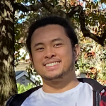

BIO
In the non-profit industry for five years, full-time Software Engineering student,
and lifelong learner of all things programming and development. Graduated with an Associate's degree in Computer Information Systems in May 2023.
Currently pursuing a Bachelor's degree in Software Engineering at Western Governors University.
BS Software Engineering Student
Western Governors University
Currently fulfilling requirements for graduation. Completed theoretical and practical courses on SQL & NoSQL, CompTia Project+,
Cloud Computing with AWS, Angular, Software Development Methodologies, APIs, Web Design, Python, and IT Business Communication.
AS Computer Information Systems Student
Laney College
Graduated in May 2023 with highest honors. Earned Certificated of Achievement in Java Programming. Completed theoretical and
practical courses on Object-Oriented Programming, Mathematics, Graphical User Interface Programming, Multithreading/Concurrency, APIs,
Networking, Data Structures & Algorithms, and Microcomputer Assembly Language.
Direct Support Provider
East Bay Innovations
Supports clients with disabilities in their day-to-day needs and activities. Provides routine medical treatments.
Manages client's personal budgetting and expenses. In-home emergency response.
Bridges communication with clients, their families, and East Bay Innovations.